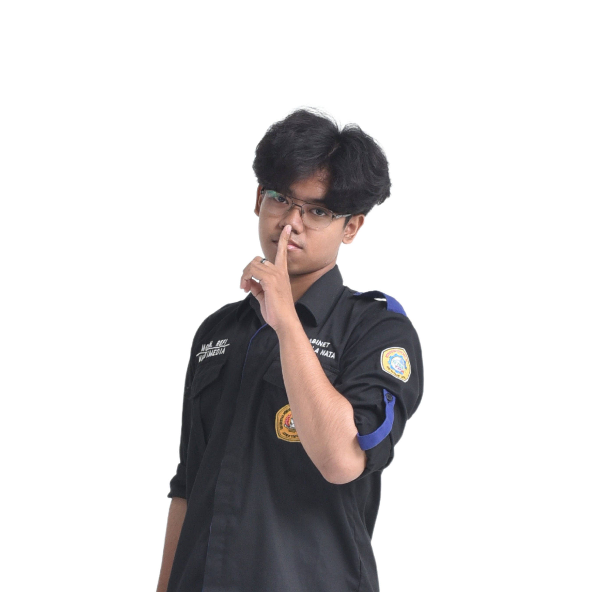

E-Cycle Platform
Sebuah platform inovatif untuk pengolahan limbah elektronik yang memanfaatkan penilaian berbasis AI untuk mempermudah daur ulang.

Saya adalah seorang Web Developer & UI/UX Designer. Berfokus pada kode bersih, perancangan antarmuka yang intuitif, dan penceritaan melalui visual.
Membangun antarmuka web modern dengan performa tinggi. Fokus pada arsitektur bersih dan pengalaman pengguna tanpa friksi.
Merancang pengalaman digital yang intuitif dan berpusat pada pengguna. Menyeimbangkan nilai estetika dan kegunaan bisnis.
Menciptakan narasi visual yang kuat, dari desain media sosial hingga elemen identitas *brand* secara profesional.
Pengeditan video sinematik dan *motion graphics* yang dirancang khusus untuk memikat perhatian audiens.
Menekuni bidang ilmu komputer dengan fokus pada pengembangan perangkat lunak dan desain antarmuka.
Bertanggung jawab dalam merancang berbagai kebutuhan desain grafis, publikasi visual, dan elemen kebutuhan web untuk himpunan.
Mengelola divisi kreatif, merancang berbagai desain visual seperti ID Card, poster acara, dan kebutuhan promosi organisasi.
Sebuah platform inovatif untuk pengolahan limbah elektronik yang memanfaatkan penilaian berbasis AI untuk mempermudah daur ulang.
Perancangan antarmuka dan *landing page* responsif untuk UMKM. Berfokus pada desain yang segar dan modern untuk meningkatkan daya tarik pelanggan.
Kumpulan karya eksplorasi desain grafis dan perancangan antarmuka (UI/UX). Mulai dari identitas visual, *social media kit*, hingga purwarupa aplikasi.
Penyuntingan video kreatif untuk berbagai keperluan visual. (Hasil karya lengkap dapat dilihat melalui tautan Google Drive).